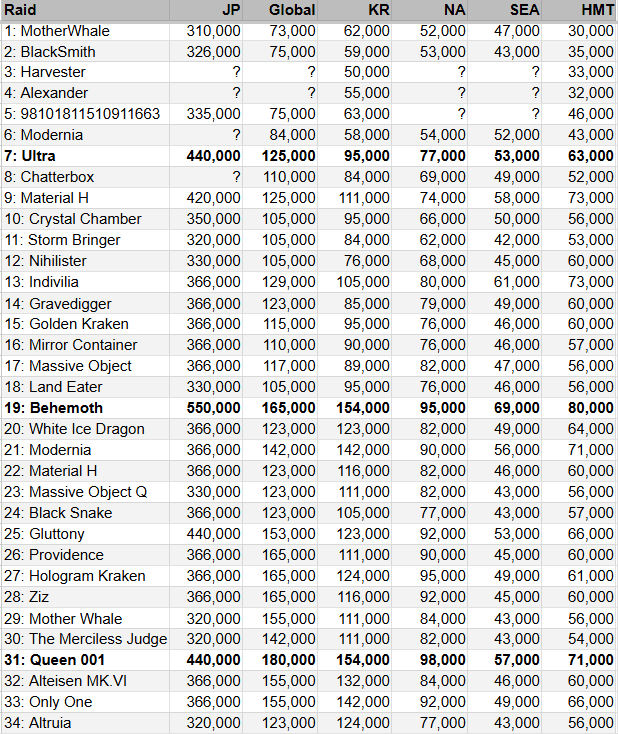
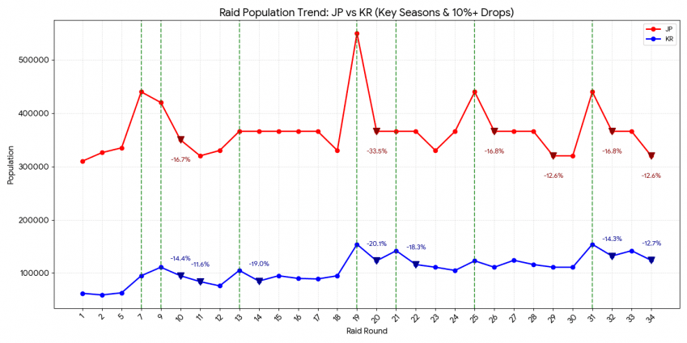
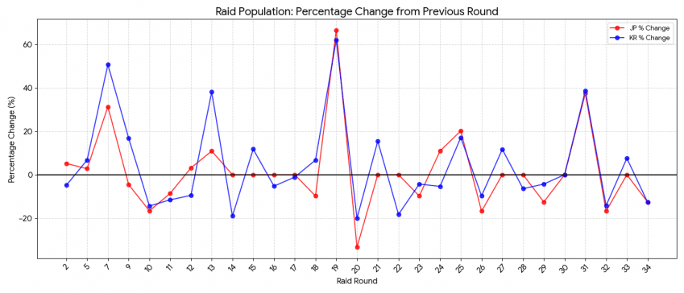
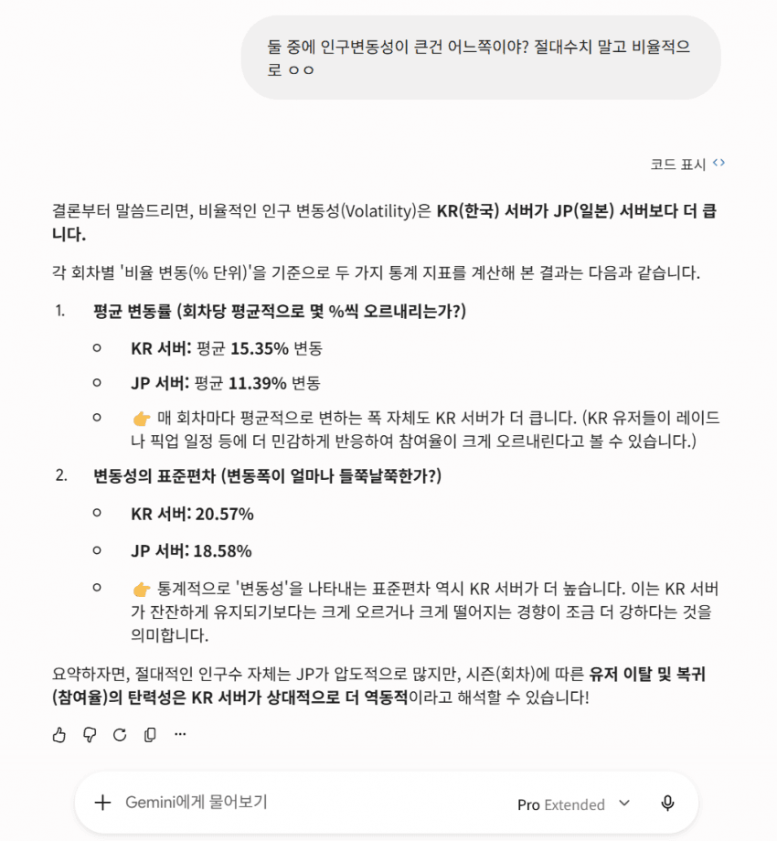

그냥 념글 구경하다 심심해서 만들어봄

데이터는 이거 넣고 돌렸음 이게 채신 맞나여

JP 서버 주요 급락 구간 (진한 빨간색 역삼각형 표시):
9회차 → 10회차: 42만 명 → 35만 명 (-16.7%)
19회차 → 20회차: 55만 명 → 36.6만 명 (-33.5%) - 가장 큰 낙폭 기록
25회차 → 26회차: 44만 명 → 36.6만 명 (-16.8%)
28회차 → 29회차: 36.6만 명 → 32만 명 (-12.6%)
31회차 → 32회차: 44만 명 → 36.6만 명 (-16.8%)
33회차 → 34회차: 36.6만 명 → 32만 명 (-12.6%)
KR 서버 주요 급락 구간 (진한 파란색 역삼각형 표시):
9회차 → 10회차: 11.1만 명 → 9.5만 명 (-14.4%)
10회차 → 11회차: 9.5만 명 → 8.4만 명 (-11.6%)
13회차 → 14회차: 10.5만 명 → 8.5만 명 (-19.0%)
19회차 → 20회차: 15.4만 명 → 12.3만 명 (-20.1%) - 가장 큰 낙폭 기록
21회차 → 22회차: 14.2만 명 → 11.6만 명 (-18.3%)
31회차 → 32회차: 15.4만 명 → 13.2만 명 (-14.3%)
33회차 → 34회차: 14.2만 명 → 12.4만 명 (-12.7%)
주요 급락 구간 = 10%이상 하락한 구간
초록선 = 주년 반주년 신년

인구% 변동

그렇다네요